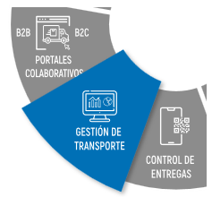
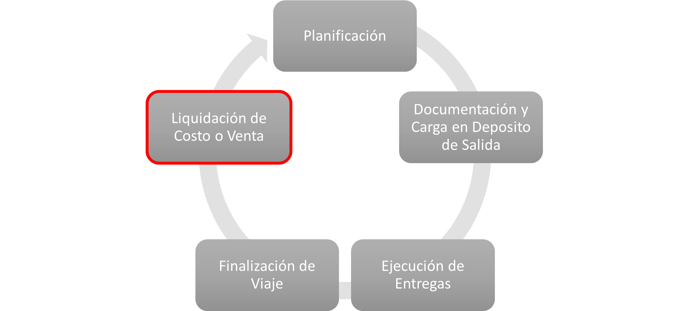

Finalización de Viajes y Tarifación#
Entidades#
Las entidades mencionadas forman la base del producto UNIGIS TMS dentro del módulo de Tarifación de Viajes, lo que permite el seguimiento en tiempo real, la gestión de usuarios y conductores, y el registro detallado de los viajes realizados.
La entidad principal en el modelo de tarifación es la guía, la cual proporciona información detallada sobre los conceptos obtenidos antes, durante y después de un viaje. Las entidades típicas que pueden estar presentes en una guía incluyen:
Información sobre las áreas y funciones que abarca la operación en un viaje, como la planificación de rutas, la gestión de carga, la optimización de la carga, la asignación de recursos, etc. Una lista detallada de las características y funcionalidades clave proporcionadas por la operación, como la planificación de rutas, la asignación de recursos, el seguimiento en tiempo real, la generación de informes, la gestión de excepciones, etc. Estas son algunas de las entidades comunes que se pueden encontrar en una guía en UNIGIS TMS, pero la estructura y el contenido exactos pueden variar según las necesidades y requisitos específicos de una operación.


Conceptos#
Planificación
Recorrido, paradas, vehículo, conductor y validación de documentación. Por ejemplo, un viaje en Estado: Inicial – Confirmado.
Documentación y Carga en Deposito de Salida (YARD)
Llegada, inspección, carga y documentación del vehículo. Por ejemplo, un viaje en Estado: de Arribo a CD, Controlado, En muelle, Inicio de Carga, Fin de Carga, Documentado.
Ejecución de Entregas: Tracking y Mobile. Por ejemplo, un viaje en Estado: Activo, En Viaje, Finalizado.
Finalización de Viaje
Proceso de rendición, logística inversa, documentación, ajuste de tarifación e incidencias. Por ejemplo, un viaje en Estado: Rendido, Liquidable.
Liquidación de Costo y Venta
Proformas, aprobación, interfase OC y OV al ERP. Por ejemplo, un viaje en Estado: Liquidado.
Tarifación#
El proceso de determinación y establecimiento de los costos asociados con el uso del servicio, ya sea para clientes potenciales que desean adquirir el TMS o para usuarios actuales que necesitan entender cómo se les cobrará por su uso, es crucial en UNIGIS TMS. Dentro de esta plataforma, la tarifación puede variar significativamente según el modelo de negocio, los factores considerados y la personalización de las tarifas.
Por lo tanto, es fundamental que los clientes comprendan claramente cómo se les cobrará por el uso del TMS y qué factores influyen en los costos. Cada viaje en el sistema contiene guías que operan con tarifación y fórmulas que, mediante flujos de trabajo específicos, generan un importe según sea su venta o costo.
Tipos de Guía#
En UNIGIS TMS, los tipos de guía desempeñan un papel fundamental, ya que sirven para diferentes propósitos dentro del proceso de implementación y uso del sistema. A continuación, se detallan las principales diferencias entre los tipos de guía existentes:
Guía de venta
Su propósito principal es proporcionar información detallada sobre las características, beneficios y valor del TMS para los clientes potenciales. Se centra en presentar las capacidades del sistema, los casos de uso, los diferenciadores competitivos y cómo puede abordar los desafíos específicos del cliente en la gestión de transporte. Cada guía de venta tarifa todos los conceptos de un viaje, con una guía por cada cliente.
¿Qué contiene una guía de venta?
Contiene agrupadores de conceptos valorizados de uno o varios viajes por el rango de fechas definido. Su contenido se centra en características, beneficios, casos de uso, estrategias de venta, diferenciadores competitivos, proceso de implementación, servicios de soporte, entre otros, generando un importe específico por cada caso de uso. Todos los importes generados en un viaje se pueden vincular con un sistema ERP externo. Las guías también contienen un flujo de estados de trabajo y conceptos según las necesidades y características de la operación, además de la información detallada por cada concepto valorizado generado por cada viaje para su tarifación.
Guía de costos
Una guía de costos busca proporcionar información detallada sobre los costos asociados con la implementación, operación y mantenimiento de toda la operación. Se centra en aspectos financieros y económicos, incluyendo costos iniciales, costos recurrentes, costos operativos y análisis de retorno de la inversión (ROI). Con la misma lógica, genera los importes para vincularlos a sistemas de ERP externos.
¿Qué contiene una guía de costos?
Su propósito principal es proporcionar información y se centra en detalles financieros y económicos, como costos de implementación, costos recurrentes, costos operativos, beneficios y ahorros potenciales, análisis de ROI y consideraciones adicionales relacionadas con los costos, con el objetivo de tomar decisiones informadas sobre la inversión de la operación.
Ambas guías son herramientas importantes en el proceso de adopción y comercialización de un sistema de gestión de transporte.
Generar Guías#
Se permite generar guías en UNIGIS TMS de dos formas: de manera automatizada o manual.
Automatizado: Durante cualquier fase de un viaje, ya sea al inicio, durante su ejecución o al finalizarlo, es posible generar las guías o documentación necesaria. Esto se logra configurando el proceso para que se ejecute de acuerdo a las necesidades específicas.
Este enfoque automatizado simplifica el proceso al integrar la generación de guías en las etapas clave de un viaje, lo que garantiza una documentación completa y oportuna en cada paso del proceso logístico.
Proceso Tarifación#
La tarifación en UNIGIS TMS puede realizarse de manera automatizada o manual, dependiendo de las necesidades y preferencias del usuario. Este proceso implica calcular los costos o ventas asociados con un viaje específico, considerando diversos factores y parámetros.
Inicialmente, se recopila información relevante sobre la carga a transportar, incluyendo el tipo de mercancía, peso, dimensiones, origen y destino, así como cualquier requisito especial del cliente. Con base en estos datos, se determina la ruta óptima y el modo de transporte más adecuado, evaluando opciones de carretera, ferrocarril, marítimo o aéreo para maximizar la eficiencia en términos de costos y tiempo.
Las tarifas se aplican a un tipo de guía y tienen un plazo de vigencia definido. Pueden contener parámetros para aplicarse a viajes, depósitos, transportes, cargas, distancias, entre otros, según su categoría. La tarifación se establece considerando diversos factores, como el tipo de parada, cliente, volumen, peso, horario, distancia, vehículos, operación, sucursal y productos.
El proceso de tarifación automatizada se realiza según los estados del viaje, acumulando los importes para cada estado y permitiendo previsualizar la rentabilidad de cada viaje. Por otro lado, la tarifación manual ofrece flexibilidad al usuario para modificar o crear nuevas tarifas según sea necesario, llenando los campos requeridos en el formulario de creación de tarifas.
La tarifación en UNIGIS TMS es un proceso integral que garantiza la precisión y la transparencia en la determinación de los costos asociados con cada viaje. Además de calcular los costos de manera automatizada o manual, el sistema también ofrece la posibilidad de configurar fórmulas personalizadas para adaptarse a las necesidades específicas de cada operación.
Estas fórmulas pueden incluir una variedad de variables y parámetros, como tarifas por kilómetro recorrido, tiempo de espera, tipo de carga, condiciones climáticas, entre otros. Esta capacidad de personalización permite a las empresas ajustar la tarifación según su modelo de negocio, políticas internas y requisitos del cliente.
Además, UNIGIS TMS proporciona herramientas de análisis y visualización que permiten monitorear y evaluar el desempeño de la tarifación en tiempo real. Los usuarios pueden acceder a informes detallados sobre los costos de cada viaje, identificar áreas de mejora y tomar decisiones informadas para optimizar la rentabilidad y la eficiencia operativa.
Fórmulas#
La flexibilidad de UNIGIS TMS permite la creación de fórmulas personalizadas para adaptarse a las necesidades específicas de cada empresa y situación. Estas fórmulas son fundamentales para calcular con precisión los costos de cada viaje y garantizar una tarifación justa y rentable. Algunas de las fórmulas comunes que se pueden utilizar incluyen:
Tarifa por kilómetro recorrido: Esta fórmula calcula el costo en función de la distancia recorrida por el vehículo durante el viaje, teniendo en cuenta factores como el tipo de vehículo, el combustible utilizado y las tarifas de peaje.
Tarifa por tiempo de espera: Esta fórmula determina el costo asociado con el tiempo que el vehículo pasa esperando durante el viaje, como en los casos de carga y descarga en almacenes o puertos.
Tarifa por tipo de carga: Aquí se considera el tipo de mercancía transportada, asignando diferentes tarifas según la naturaleza de la carga, su fragilidad, peligrosidad o requerimientos especiales de manipulación.
Tarifa por condiciones climáticas: Esta fórmula ajusta el costo del viaje según las condiciones climáticas adversas en la ruta, como lluvia, nieve o vientos fuertes, que puedan afectar la velocidad y seguridad del transporte.
Tarifa por horario: Se establecen diferentes tarifas según la hora del día en que se realice el viaje, considerando los picos de tráfico, las restricciones de circulación y las tarifas de peaje dinámicas.
Estas son solo algunas de las muchas fórmulas que pueden ser configuradas en UNIGIS TMS para adaptarse a las necesidades específicas de cada empresa y sus acuerdos con clientes y proveedores de servicios de transporte. La capacidad de personalización de las fórmulas garantiza una tarifación precisa y transparente, promoviendo una relación sólida y equitativa entre todas las partes involucadas.
Incidencias#
Gestionar las incidencias de manera eficaz es crucial para garantizar la continuidad de las operaciones de transporte y la satisfacción del cliente en UNIGIS TMS. Estas situaciones imprevistas pueden variar en su naturaleza y gravedad, desde retrasos en la entrega hasta problemas mecánicos o incidentes en la ruta. Es fundamental abordarlas de manera rápida y efectiva para minimizar su impacto en la cadena de suministro.
Para facilitar la gestión de incidencias, UNIGIS TMS ofrece herramientas que permiten registrarlas fácilmente, ya sea a través de la aplicación móvil o directamente desde el registro del viaje. Una vez registradas, las incidencias pueden seguir un flujo de trabajo estructurado, con diferentes estados que indican su validación y resolución.
Además, algunas incidencias pueden ser gestionadas de forma automatizada, lo que agiliza su resolución y reduce la intervención manual. Esto garantiza una respuesta rápida a los problemas que surjan durante los viajes, mejorando la eficiencia operativa y la calidad del servicio.
En resumen, UNIGIS TMS proporciona las herramientas necesarias para gestionar incidencias de manera efectiva, asegurando que los problemas se aborden de manera oportuna y que se mantenga la satisfacción del cliente en todo momento.
Liquidación#
La liquidación de viajes en UNIGIS TMS es un proceso esencial para garantizar la correcta contabilización y pago de todos los costos asociados con la ejecución de cada viaje. Este proceso asegura que todos los gastos y cargos relacionados con el transporte se registren de manera precisa y se paguen de acuerdo con lo acordado.
En UNIGIS TMS, la creación de una liquidación se adapta a las necesidades específicas de cada situación. Se solicita llenar los datos correspondientes de los servicios prestados, basados en el tipo de liquidación que se requiera y el rango de fechas establecidas. Una vez ingresados estos datos, se seleccionan las guías con el estado adecuado para la liquidación y se genera la hoja de liquidación correspondiente. Al finalizar este proceso, se ofrece la opción de imprimir la hoja de liquidación para su archivo y seguimiento.
El proceso de liquidación en UNIGIS TMS sigue un flujo de trabajo estructurado, con diferentes estados que reflejan el progreso y la validación de la liquidación. Este flujo de trabajo puede ser configurado según las necesidades específicas de la operación, lo que garantiza una gestión eficiente y transparente del proceso.
Además, dentro del portal del transporte, los servicios de transporte de terceros tienen la capacidad de visualizar la liquidación de sus viajes y los servicios prestados a través de una publicación de estados. Esto promueve la transparencia y la colaboración entre todas las partes involucradas en el proceso.
En resumen, la liquidación de viajes en UNIGIS TMS permite realizar ajustes de importes positivos o negativos según sea necesario, lo que garantiza una contabilización precisa y transparente de todos los costos asociados con el transporte.